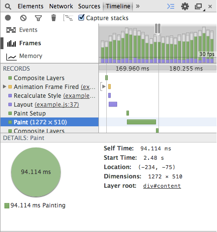
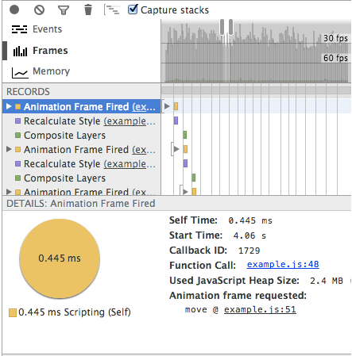

Which background is better? Most text editors and document readers have light backgrounds. But there's a lot of programmers who use dark backgrounds. And there are a some analytics and dashboard applications with dark backgrounds.
Black or White
July 27, 2014

Stephan Few has criticized using dark backgrounds for dashboards in his book Information Dashboard Design, citing an image of Roambi. By the way, Roambi later moved to a white background and then brought back the option of dark backgrounds.
Have you noticed that many business intelligence (BI) software companies have introduced black screens as the standard for mobile devices? Is this because mobile devices work better with black screens? If you look for the research, as I have, it isn’t likely that you’ll find any.
No one seems to question the efficacy of light backgrounds for reading text. Why the difference? Text and graphics both involve objects that are constructed of lines and filled in areas of color. Do they differ in a way that demands a different background color? I don’t think so.
In the above article he discusses arguments by vendors who use dark backgrounds. Most of the arguments he has considered are technical (battery saving, sunlight reflection) and doesn't discuss which is better if technology wasn't a constraint. I feel the discussion is biased towards light backgrounds.
The article is based on the idea that because white backgrounds are used in editors and readers for a long time, it is better to stick to it until there is solid evidence that dark backgrounds are better.
Editing and reading software use white backgrounds to mimic paper. Paper is whitish and has been there for centuries. However that was probably because of technological limitations on paper and ink colors. It was not a decision based evidence that white backgrounds are perceptually better.
Edward Tufte has brought it up in one of his discussions.
The usual metaphor for screens (projection and computer) these days seems to be black type on a white background, that is, a paper metaphor. This sometimes results in video glare, with lots of rays coming from the background. Sometimes the old fashioned computer screen seems less tiring, showing lit-up text on a dead backround.
Then he continues to discuss why his website has a light background.
But my metaphor here is paper, like a book. If reproduced on a dark background, my images (which are generally very light in value) would come blaring and glaring out of the dark surround.
Light backgrounds produce video glare. So turn the screen brightness at night and after working many hours at the computer. It is often useful to dull down the electric-blue white of the computer screen with a soft background tone, as done here.
I feel what needs to be considered is how people use your application. If they switch between your application and other applications with light backgrounds (e.g. websites, editors, physical paper), then you should consider a light background. It won't happen the other way around often since majority of software uses light backgrounds, with the exception of photo editors.
If the software is used in isolation, dark or light wouldn't make a big difference. Then the factors such as device, power consumption, coolness (aesthetics) and glare can be considered.

These dark and light screenshots are still WIP. We were trying different backgrounds to see which is better. When placed inside this blog, the screenshot with light background looks a lot better because of the surrounding.*
SEO Crap
July 27, 2014
SEO is dead - at least much different from what it was known to be. But there are a plenty of consultants who market SEO, as if it is something that is hard to get right. Many organizations fall for it.
Search engines do not want to show web sites with some special SEO sauce to be on top. They want websites that people look for.
There were days when you could use neat little tricks (link farms, etc) to go higher on search results. This was possible because it is hard for an algorithm to figure out what's better content. Now search engine algorithms have gotten better and they don't fall for these tricks.
Yet I knew from experience that the real secret to SEO was not about tricks but about making your site the best it could be for your users while keeping the search engines in mind. It was true when I started doing SEO and it’s true now. Doing that always, always, always works to bring more targeted search engine traffic to your website. But, sadly, the tricks that the other SEO people were doing and writing about also worked, albeit temporarily.
So as long as your website
- has good content which people like,
- is accessible to internet users,
- uses proper HTML syntax, and
- is crawlable
you don't have to worry about getting consultancy for SEO. If your web developer can't get 2, 3 and 4 right, you should get a better developer; often it requires effort to get those wrong.
2 to 10 times faster HTML animations
May 10, 2014
When animating/moving HTML elements, setting their position with -webkit-transform: matrix3d() gives two to ten times faster frame rates compared to top/left or -webkit-transform: matrix(). On mobile devices you can observe native app like performance with transform: matrix3d.
Demo
It moves a panel that contains 10,000 div elements. On my macbook air running chrome, transform:matrix3d gives 30 - 40 fps while position:top/left and transform:matrix gives 10-15 fps. You can check the frame rate by selecting Show FPS meter on Rendering tab of chrome developer tools.
The following image shows snapshot of frames timeline with top/left.

This is the snapshot of frames timeline with transform:matrix3d.

transform: matrix3d takes out the paint operation which gives increased frame.
The 3d translation layers offer a way of pre-blitting all the stuff inside the DOM element into a layer, which is therefore available for direct blitting operations inside the render tree. Well, at least that's the conceptual idea behind.
martensms on html5gamedevs.com
The frame rates with transform:matrix3d becomes about 10 times higher than other methods as the content of the panel which moves gets heavier. I tried with about a 1,000 small SVG graphs with 1,000 data points.
Most of the discussions I found on the internet were comparing top/left to transform: matrix or transform: translate 1, 2, but not so much information about using transform: matrix3d.
Weya.coffee
March 19, 2014
Here's a small example to show the usage.
userElems = []
Weya container, ->
@div ".users", ->
for user, i in users
userDiv = @div '.user', on: {click: editUser}, ->
name = @span ".name", user.name
@span ".phone", user.phone
if v.image?
@img src: user.image
userDiv.userId = i
userElems.push user: user, name: nameThe above code creates a list of users. It binds the data to the dom element userDiv.userId = i and also keeps track of all the DOM elements in userElems. This is important if you want to manipulate the DOM without reloading the entire user list, for example if a name of a user changes you could change it with userElems[changedUserId].name.textContent = changedUserName.
Is it a template engine?
Weya is quite similar to Coffeecup in terms of the syntax. But it's much faster, so it won't fail if you have lots of elements.
Also, Weya lets you register event handlers. I feel this is much cleaner than registering events later with CSS selectors, and it's easier to maintain the code since events are register within the DOM creation code.
Can it replace d3.js?
We use weya to replace most all the d3.js DOM manipulation.
Code with Weya is simpler, shorter and nicely intended. Here's the code that draws bar chart in this example.
Weya svg, ->
for d in data
@g ".g", transform: "translate(#{x0 d.State},0)", ->
for age in d.ages
@rect
width: x1.rangeBand()
x: x1 age.name
y: y age.value
height: height - y age.value
fill: color age.name
for d, i in ageNames.slice().reverse()
@g ".legend", transform: "translate(0,#{i * 20})", ->
@rect x: width - 18, width: 18, height: 18, fill: color d
@text
x: width - 24, y: 9, dy: ".35em"
style: {'text-anchor': "end"}, text: dHere's the code that does the same with d3.js.
var state = svg.selectAll(".state")
.data(data)
.enter().append("g")
.attr("class", "g")
.attr("transform", function(d) { return "translate(" + x0(d.State) + ",0)"; });
state.selectAll("rect")
.data(function(d) { return d.ages; })
.enter().append("rect")
.attr("width", x1.rangeBand())
.attr("x", function(d) { return x1(d.name); })
.attr("y", function(d) { return y(d.value); })
.attr("height", function(d) { return height - y(d.value); })
.style("fill", function(d) { return color(d.name); });
var legend = svg.selectAll(".legend")
.data(ageNames.slice().reverse())
.enter().append("g")
.attr("class", "legend")
.attr("transform", function(d, i) { return "translate(0," + i * 20 + ")"; });
legend.append("rect")
.attr("x", width - 18)
.attr("width", 18)
.attr("height", 18)
.style("fill", color);
legend.append("text")
.attr("x", width - 24)
.attr("y", 9)
.attr("dy", ".35em")
.style("text-anchor", "end")
.text(function(d) { return d; });Another problem we solved with Weya is that d3.js draws all the elements that are represented by the data at once. And with Weya we can draw progressively - this is quite useful when you have a lot of data and you don't won't the interface to go unresponsive until everything is drawn. Here's a small example to show the point.
i = 0
data = ...
draw = ->
return if i is data.length
d = data[i]
Weya container, ->
@div '.user', ->
...
i++
requestAnimationFrame draw
draw()The disadvantage of Weya over d3.js is that it doesn't bind data to DOM elements like d3.js does. So you can't use enter(), exit() and updates when data changes. But most users rarely need these features. We use Weya with our own data bindings with DOM elements (as in the first example with userElems), and we find it simpler than enter() and exit().
People who are really serious about software should write their libraries
February 19, 2014
We have been using a lot of tools and libraries in our software, and have replaced a number of them with our code. Libraries makes it easy to get things done, and to ship early. But from my experience, having a third-party library or a tool dominate a core part of your software is not a good idea.
People who are really serious about software should make their own hardware.
- Alan Kay
We have moved away from a number of libraries (and frameworks and platforms) over the last couple of years. This may sound like a lot of hate, but it is not so. We still love those libraries and use them on a lot of smaller projects. But when your product grows and you want to mold it the way you want, sometimes libraries stand in your way. Some of the decisions we made could be wrong because we didn't understand the library properly. But we spent a lot of time trying to stick to those libraries before replacing them.
Writing your code instead of using libraries takes a lot of weight off the product. Most of these libraries are written by really good programmers to be used in a wide range of scenarios, and there is a pretty good chance that you won't need them all. So getting inspiration from them and writing your own stuff will make the software lighter while making things work the way you want. A lot of programmers are likely to write their own code to replace libraries at some point, and that is probably why there are a number of libraries doing almost exact same thing in slightly different ways.
One of the traps you can fall into when writing our own code is that you might just end up reinventing the wheel. There is a chance that you replace a well written library with a small piece of code initially, but with time end up improving your code to do exactly the same thing the library you threw away did.
jqPlot
Our first release of Forestpin used jqPlot for most of our charts. Some not-so-ordinary visualizations were made with protovis1. jqPlot helped us quickly develop a product (MVP) to show potential customers, but introduced a lot of constraints. We made some changes to jqPlot to customize some of the charts, but it wasn't enough. The next version of Forestpin used d3.js for all the visualizations2, which gave us more control. We never used jqPlot any project, thereafter.
Backbone.js
Backbone was used at Forestpin as well as at nearby.lk. What triggered us to code a replacement for Backbone was that it didn't save states in HTML5 history3. We weren't using most of the features of Backbone too, so the replacement, Sweet.js, was much simpler. We plan on making Sweet.js independent from jQuery and Underscore.js, and also renaming it so that it doesn't get confused with Mozilla's Sweet.js.
Database
Forestpin Enterprise used a custom in-memory data store built ground up at Forestpin from the early days. The data store was a core part of the Forestpin product, and we gained a lot of performance by doing most of the calculations within the database itself.
jQuery Mobile
nearby.lk decided to drop jQuery mobile after an year with it. Adopting jQuery mobile was a bad decision. It was very heavy4 and was not developed to be used for apps like nearby.lk. jQuery mobile is super easy to be implemented for a web site with server generated HTML pages, but ours had a lot of dynamically generated pages and we spent quite sometime getting jQuery mobile to work.
Google App Engine
nearby.lk was hosted on Google App engine for an year and a half and we moved to Amazon5.
d3.js
At Forestpin, we use d3 for all our visualizations and some tables - whenever data is connected to the DOM. We also introduced CoffeeScript helpers to simplify D3.js DOM manipulation code.
We came across some requirements which were hard to tackle with D3.js. One was adding DOM elements progressively. For example, when you are drawing a matrix with a large number of small rectangles. if you draw all if it at once, the user will see nothing for a while and everything will appear at once. But it would have been more user friendly, if elements were added progressively. Then the user will see sets of rectangles appearing in short intervals, as if it was an intended animation. The total time for all rectangles to appear might be slightly longer, but the user will feel otherwise. We couldn't find a neat way to do this with D3.js.
Another problem was that we couldn't move a particular DOM element across parent elements easily. For instance, if you want to show controls like the action links beneath the focused tweet in the twitter timeline, you should either have hidden action links on each tweet. or redraw action links when the focus changes, or have the action links on a different layer and move it. The first two options are not efficient and the third is tricky. The easiest is to have a DOM element removed and inserted to the focused tweet when the focus changes. This option, although probably not as efficient as the third option, is simpler and faster than the first two6.
There were a few similar issues so we thought of going for native Javascript code for DOM manipulation, and wrote a small library with an interface similar to CoffeeScript helpers for d3.js. We will continue to use D3.js for scales, csv parsing, etc.
jQuery
jQuery is used for selectors, events and Ajax. The dependency on jQuery is becoming less and less. Using pure Javascript is not that complicated and it is much faster7.
Although we've been moving away from a lot of libraries and tools, there is still a number of libraries we use. We use them because they make the development process easier, but only as long as they don't constraint us from building what we want to build.
We stopped advertising on Facebook
December 30, 2013
Or, How to get Facebook "likes"?
nearby.lk stopped advertising on Facebook to get Facebook "likes", because we felt that it was a giant fruitless scheme of making Facebook rich. Most of the "likes" on Facebook are useless, they are basically random clicks, which adds no value to anybody, and you need to pay Facebook for that. By the way, this may not be the case with advertising for *Clicks to Website*, *Website Conversions*, etc. - I don't have experience with those.
We got on Facebook when one of our employees created a fan page for the company, which we later made our official page. Facebook advertising was important for us to get awareness and to build reputation - so that our clients know we are popular because a lot of people like us on Facebook.
It didn't take us long to realize that the first goal is never met because we got almost no traffic to nearby.lk from Facebook; it was way lower than the number of likes we were getting. What we expected was the other way around - lots people visiting the site and a few "liking" us. "Like" never meant like, it meant click. People who "liked" probably didn't even know what they clicked, so it didn't do any marketing for us. Also, more "likes" didn't mean that there was a large set of users who would see our updates, since most of these people have liked hundreds of pages.
Our second goal, building a reputation, a public available figure to show we are popular, was met. And it still works, because most people don't know how Facebook "likes" work. They believe we have a lot of likes because we have a great product and people like it. But there's absolutely no dwirelationship between the two.
State Department has spent $630,000 on Facebook1, 2.
"Many in the bureau criticize the advertising campaigns as ‘buying fans' who may have once clicked on an ad or ‘liked' a photo but have no real interest in the topic and have never engaged further," reads the Inspector General report.
At least they got their "likes" from homeland.
When we launched a prototype nearby.in with attractions in India, we advertised on Facebook targeting India. With a bit of research while doing that, we realized how most companies in Sri Lanka, which has almost nothing to do with foreign countries, get Facebook likes from countries other than Sri Lanka. They simply advertise targeting other countries, especially developing countries with large populations. And it is cheaper.
For instance the page FYI - Sri Lanka Mobile Directory probably, as its name implies, has nothing to do with Turkey.

Not all companies are stupid enough to let others see their likes are useless. They spread it among a number of countries, while putting a little extra advertising in homeland, so that the most popular country remains to be homeland. To see how they do it you need to go create an ad yourself.

So it's all about a race to get more likes, not creating a product that people like. And since these are not genuine likes, number of likes in Facebook becomes just a figure of how much money you can waste on Facebook; that is exchanging your money for Facebook "likes" which has no meaning.